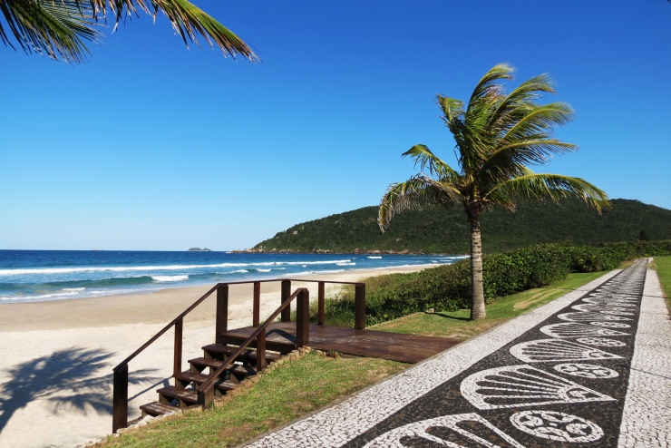
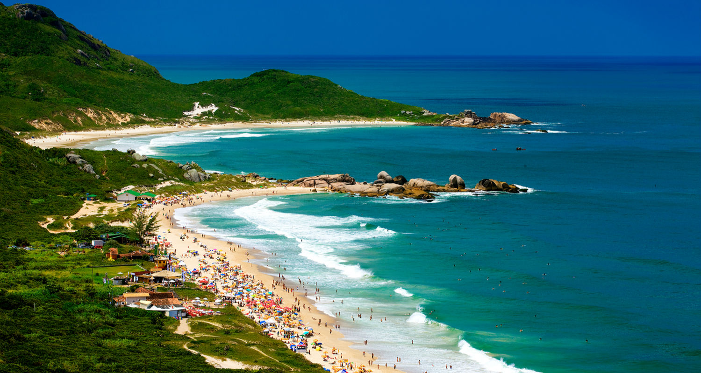

Florianópolis é a capital do estado brasileiro de Santa Catarina, na região Sul do país. O município é composto pela ilha principal, a ilha de Santa Catarina, a parte continental e algumas pequenas ilhas circundantes. A cidade tem uma população de 516 524 habitantes, de acordo com estimativas para 2021 do Instituto Brasileiro de Geografia e Estatística (IBGE). É o segundo município mais populoso do estado (após Joinville) e o 48º do Brasil. A região metropolitana tem uma população estimada de 1 209 818 habitantes, a 21ª maior do país. A cidade é conhecida por ter uma elevada qualidade de vida, sendo a capital brasileira com maior pontuação do Índice de Desenvolvimento Humano (IDH), calculado pelo PNUD, das Nações Unidas.


Curiosidade
- O motivo por FLorianópolis se chamar "Ilha da Magia": O verdadeiro motivo são as bruxas, lobisomens, fantasmas… que segundo as lendas, assustavam os pescadores, roubavam seus barcos, brincavam com as suas tarrafas e davam nós nas crinas dos cavalos.
- Floripa já foi chamada de Porto dos Patos. O italiano Sebastião Caboto, a serviço da Espanha, durante sua expedição em 1526, nomeou assim, ao publicar seus mapas referentes à região.
- A Ponte Hercilio Luz é a maior ponte erguida por cabos de suspensão no Brasil.
- Os primeiros moradores de Florianópolis datam de quase 5 milênios atrás. Dados apontam que os moradores mais antigos denominados ”Homem de Sambaqui” já habitavam a ilha há mais de 4800 anos.
- A Avenida Pequeno Principe (uma das principais do Campeche) é em homenagem ao escritor do famoso livro “O Pequeno Príncipe”.Ele era piloto e esteve em Floripa a trabalho como piloto. Falando nisso você já leu? É um livro espetacular, seja para adultos ou crianças. Não perca essa oportunidade, pois é realmente encantador.
- Primeira rua calçada de Floripa, foi feita para receber o Imperador Dom Pedro I. Até hoje o calçamento está lá e pode ser visitado em Santo Antônio de Lisboa. Inclusive ocorre nela uma feirinha charmosa aos finais de semana. Em nosso City Tour Sunset Norte, passamos lá ao final de tarde, horário do espetacular e famoso Por do Sol de Santo Antonio e Lisboa.